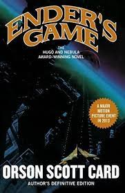

Favorite Book
Link to Book
I thourghly enjoyed this book because I enjoy science-fiction stories that deal with aliens. Particularly, I loved the twist at the end and how the main character, Ender, was manipulated at a young age.
I thourghly enjoyed this book because I enjoy science-fiction stories that deal with aliens. Particularly, I loved the twist at the end and how the main character, Ender, was manipulated at a young age.
"How it Go" by Yeat
Suits